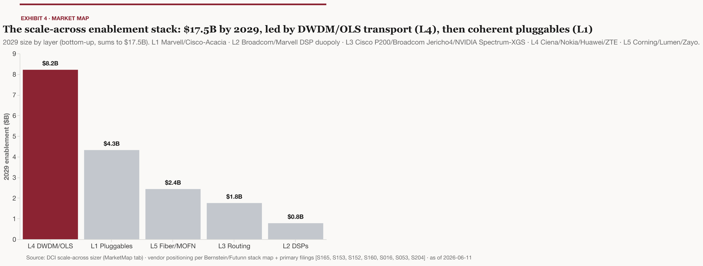
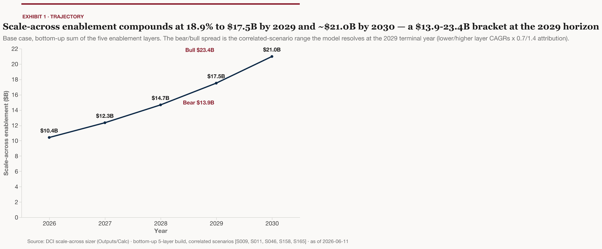
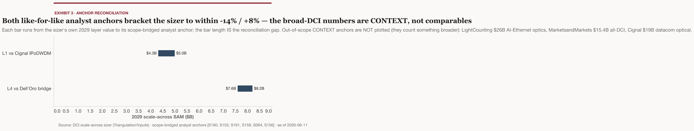
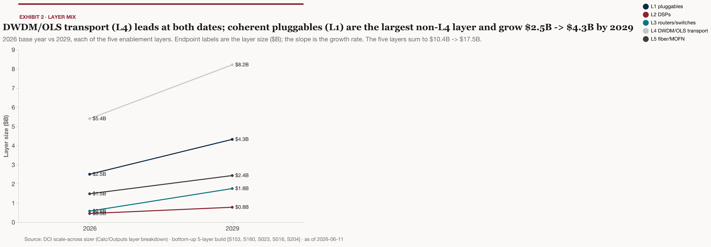

Date: 2026-06-11 · Type: Market / sector primer · Model: /Users/johnhendren/Desktop/Projects/vault/kb/outputs/models/dci-scale-across-sizer_v1_2026-06-11.xlsx
Who this is for and what it answers. This primer is for a buy-side reader oriented to AI infrastructure but not to optical networking. It answers one question: is “scale-across” enablement — the equipment that lets multiple data centers train and serve AI models as one cluster — a distinct, investable equipment category, and if so, how big is it, how fast is it growing, who is winning each layer, and what breaks it? After reading, you should be able to place any vendor print or analyst forecast in this market on the right layer and the right scope — and know which headline numbers must never be added together.
Scale-across became a named equipment category in 2025 because power — not compute, not networking preference — now caps what a single data center can do, and the interconnect it demands sits an order of magnitude beyond legacy data-center interconnect.
The industry stack has three tiers. Scale-up networking connects GPUs within a rack (latency-optimized, largely copper); scale-out connects racks within a data center; scale-across — the new third tier — connects geographically separate data centers so they operate as a unified AI system 1 2. NVIDIA coined the term at Hot Chips in August 2025 with its Spectrum-XGS Ethernet launch, positioning it as a third pillar of AI computing beyond scale-up and scale-out 3 4 5. Broadcom shipped Jericho4, its Ethernet fabric router for interconnecting 1M+ XPUs (accelerators) across data centers, the same month 6, and Cisco, NVIDIA and Broadcom together created the category because legacy WAN (wide-area network) and DCI (data-center interconnect — historically the links that connect data centers to users and to each other for ordinary cloud traffic) are not fast enough to scale AI training across sites 7 8. Three competing vendor ecosystems plus IDC converging on the same taxonomy inside twelve months tells us this is an industry-wide architectural response, not one vendor’s marketing label 1 3 6 7.
The forcing function is power. Cisco’s networking lead states plainly that power consumption has become the primary limiting factor on AI scaling, making scale-up and scale-out alone insufficient 9. Microsoft’s optical-infrastructure team quantifies it: traditional cloud facilities run 50–300 MW, AI clusters are pushing toward 1–5 GW, and the uneven geography of US power plus regulatory lag make single-site concentration of training capacity increasingly infeasible 10. Multiple one-million-XPU clusters are planned for 2027, and no single building can deliver the gigawatts they need — so the cluster must be split across sites and across power grids 8. Google frames the same constraint as campus-as-a-computer: training demand now exceeds the power and space of any one data center, forcing unified multi-data-center domains 11 12. Because the driver is grid physics rather than a networking refresh cycle, the demand is structural: it goes away only if single-site power availability is solved.
Four axes — worth holding onto, because every later section refers back to them — define what scale-across demands of equipment:
Each axis is an order-of-magnitude step beyond what legacy DCI gear was built for 13 8 21 — and our reading of that gap is the core of the market case: the buildout translates into new equipment spend across every layer of the optical and switching stack, which is the market this primer sizes.
This is production reality, not roadmap: every US frontier-compute operator — Microsoft, Meta, Google, AWS, and OpenAI/Stargate — is running or building multi-data-center AI clusters today.
Microsoft operates the flagship: its Fairwater Atlanta site is connected to the first Fairwater site in Wisconsin over a dedicated AI WAN, forming what it calls a planet-scale AI superfactory 22. Supporting it, Microsoft added more than 120,000 miles of dedicated fiber in a single year 23 — growing its total fiber plant by more than 25% 24 — and Azure’s overall WAN capacity reached 18 Pb/s by late 2025, having tripled since the end of fiscal 2024 23. The fiber mileage matters because we read the self-build choice as evidence that dedicated physical capacity, not leased transit, is the binding input.
Meta is the most transparent deployer and the demand event behind the pluggable-optics inflection (§4). Its AI Backbone interconnects clusters across campus data centers using 800G ZR+ coherent pluggables on C+L-band DWDM — terms defined in §3 — at 64x800G (51.2 Tb/s) per fiber pair; a single AI Backbone site-pair is twice the size of the global backbone Meta built over the prior decade 21. By emptying five production data centers in one campus region, Meta assembled a single 129,000-H100 cluster 25, runs production training jobs across a few data centers housing hundreds of thousands of GPUs — including a 100K-GPU job spanning buildings 26 27 — and is building Prometheus (1 GW+, online 2026) and Hyperion (scaling to 5 GW) next 28. The hardware spine is a hierarchical “BAG” super-spine on Broadcom Jericho3 line cards (432x800G ports each) with inter-BAG links at 16–48 Pbps per region pair 16 16. Meta also runs a scale-across testbed with fiber spools up to 500 km to characterize the design space before committing capital 27 — evidence the architecture is being engineered, not improvised.
Google is the existence proof at the frontier-model level: Gemini Ultra was trained synchronously across multiple data centers, combining TPUv4 SuperPods (4,096 chips each) with model parallelism inside pods and data parallelism across them 29 30. Google’s WAN sustained 10x traffic growth from 2020 to 2025 to support cross-site AI 12, and its Virgo network links 134,000 TPUs at 47 Pb/s of non-blocking bandwidth in one fabric, expandable to more than one million TPUs — or up to 960,000 GPUs — across multiple sites, with 4x more bandwidth per accelerator and 40% lower unloaded fabric latency than its prior generation 11 31 11 — fabric capacity engineered for million-accelerator scale before the accelerators arrive; we read that as interconnect spend scaling with ambition, not just installed base.
AWS corroborates the pattern on a non-NVIDIA stack: Project Rainier spans multiple US data centers with EFA networking connecting Trainium2 UltraServers both inside and across sites — roughly 500K chips at activation, with Claude to scale past 1M chips by end of 2025 32. The New Carlisle, Indiana campus alone runs 7 of a planned 30 buildings drawing over 2.2 GW 33. AWS is also rethinking the switching layer itself: its RNG random-graph topology cuts switch count 9–45% versus conventional fat-tree designs 23 — a reminder that scale-across reshapes switching economics, not just optics.
OpenAI/Stargate is distributed by design: the Abilene flagship runs 1.2 GW across eight buildings connected as a single cluster (eventually >450,000 GB200 GPUs) 34, and the program reached nearly 7 GW of planned capacity and over $400B of investment across at least seven US sites, on a path to 10 GW 35. Among neoclouds, CoreWeave will be among the first to connect its data centers with NVIDIA’s Spectrum-XGS 5 — so adoption is already extending beyond the big five operators.
Five independent operators, three different accelerator families, one architecture — which is why the equipment market in §4 can be sized as a category rather than as one customer’s shopping list.
The equipment opportunity decomposes into five layers — coherent pluggables, DSPs, scale-across switching, DWDM line systems, and fiber — each with a distinct vendor set, and the model sizes the market on exactly this taxonomy.
The model splits DCI enablement into: (L1) coherent ZR/ZR+ pluggable optics; (L2) the coherent DSPs inside them; (L3) routers/switches purpose-built for scale-across; (L4) DWDM open line systems; and (L5) fiber itself — a five-layer cut that is the model’s own organizing scheme; at the supplier level, sell-side interconnect coverage (the Bernstein interconnect primer in Noldor) groups the same optical/interconnect supplier set — Coherent, Lumentum, Fabrinet, Corning, Sumitomo and others — as a single tier 36. Definitions and the state of play, layer by layer:
L1 — Coherent pluggables. Coherent optics encode data in the phase and amplitude of light, enabling long distances over a single wavelength; a “pluggable” packs that capability into a module the size and power class of an ordinary switch-port optic, rather than a dedicated chassis (a “transponder”). The governing standards come from OIF (the Optical Internetworking Forum): its 800ZR Implementation Agreement (OIF-800ZR-01.0, published October 30, 2024) defines single-span, amplified 80–120 km links for DCI, and it remains the sole canonical version as of June 2026, with multivendor interoperability demonstrated at ECOC 2025 (35 companies) and OFC 2026 (nearly 100 modules from 15 vendors) 37 38 39. A companion 800LR agreement (April 2025) covers unamplified 2–10 km links 38 38 39. In practice, 800ZR carries 800G up to 120 km amplified, while 800G ZR+ (the longer-reach variant) carries 800G over 1,000+ km, at roughly 28–31 W per module 40 41; reach trades against rate — 800G to 1,000 km, 600G to 2,000 km, 400G to 3,000 km 42. Cignal AI reports coherent pluggables now lead the coherent market in deployed bandwidth and growth, with DCI and AI scale-across fabrics as their primary application and large deployments at Microsoft to be joined by other hyperscalers over the next several years 43; Cignal expects Meta to be the earliest 800ZR+ customer 44, and its 4Q25 report has the race to fill Meta’s scale-across orders just beginning 45. Standardized, multivendor, and small — which is why this layer scales fastest and commoditizes fastest.
L2 — Coherent DSPs. The digital signal processor is the silicon brain of a coherent module, and it is an effective duopoly with no mature Chinese alternative 46: at 400G, Acacia (Cisco) and Marvell dominated; at 800G the field opened — Marvell’s first 800G DSP lacked OpenROADM PCS support and was excluded from early Meta 800ZR+ volumes, which were shared by Cisco/Acacia, Ciena and Nokia 47 48. A single missing protocol feature reallocating the marquee deployment tells us hyperscaler qualification detail, not headline specs, decides DSP share. The 1.6T generation is the next contest: Broadcom’s 3nm Taurus DSP is already sampling, roughly six months ahead of Marvell’s Electra/Libra and COLORZ 1600 (2H 2026) 49 48; OIF’s 1600ZR/ZR+ agreements are in flight (no IA published as of June 2026) with IEEE 802.3dj 1.6TbE standardization work underway 50 38 51; and 3.2T coherent will demand a ~40–50W liquid-cooled envelope on 1.4nm-class silicon 51 — a roughly two-year generation cadence that re-runs the design-win contest each cycle and keeps DSP share contestable.
L3 — Scale-across switching and routing. This is where the category label was minted and where revenue is youngest. NVIDIA’s Spectrum-XGS claims up to 1.9x NCCL all-reduce bandwidth (the collective-communication operation at the heart of distributed training) at 10 km versus off-the-shelf Ethernet, using telemetry-based, distance-aware congestion control instead of the deep packet buffers that add latency and jitter 4 52 4. Broadcom’s Jericho4 delivers 51.2 Tb/s per ASIC and could connect two data centers at ~115.2 Pb/s at full port scale, with reach fundamentally limited to ~100 km by light speed 53 6. Cisco booked its first Silicon One P200 scale-across design wins in FQ3 FY2026 — two hyperscalers, plus a third in early Q4 — with management noting zero scale-across contribution in reported numbers or guidance yet 54. Silicon from all three ecosystems landed within twelve months and design wins are dated mid-2026, so L3 deployment is just starting — spending here trails the optical layers.
L4 — DWDM open line systems. DWDM (dense wavelength-division multiplexing) puts many wavelengths on one fiber pair — each carrying 800G to 1.6T — and an open line system (OLS) is the amplifiers, multiplexers and management layer that carries them across C-band plus L-band spectrum (e.g., 32+32 channels) over thousands of km 55. Two deployment patterns are emerging: “near” scale-across (metro/regional, single-span, Raman-amplified to avoid intermediate amplifier huts) and “far” scale-across (multi-region, where in-line amplification sites — ILAs — are unavoidable and need order-of-magnitude densification; Nokia’s multi-rail ILA amplifies 160 fiber pairs per rack, 40x legacy density) 15 8. At the transponder end, Ciena’s WaveLogic 6 Extreme runs 1.6T single-carrier wavelengths in metro and 1.2T across 1,000 km 56. A managed variant exists for operators who don’t want to own the network: MOFN (managed optical fiber network), where a carrier builds and operates a hyperscaler-spec dedicated DWDM network as a service — Ciena, Lumen and Zayo offer it 57, which converts L4 capex into opex and widens the buyer base beyond operators willing to own networks.
L5 — Fiber. The physical layer is locking up under long-term agreements rather than spot purchases: Corning’s optical sales grew 36% YoY in Q1 2026 to ~$1.8B, and it signed two more hyperscaler long-term deals similar to its up-to-$6B Meta agreement 58 59. Lumen has secured nearly $13B of Private Connectivity Fabric contracts — including selection by Anthropic — building toward ~58M intercity fiber miles by 2031 60. Zayo signed its largest-ever network investment (8,000 route miles, 15M+ fiber miles, anchored by a global AI infrastructure partner) and closed its $4.25B acquisition of Crown Castle’s fiber business — part of Crown Castle’s $8.5B two-part exit, whose small-cells business went to EQT — taking its network to 224,000 route miles 61 62 63. And as §2 showed, Microsoft self-builds at 120,000-fiber-miles-per-year scale 24 — so carrier contracts capture only part of L5 demand, and the layer’s true size exceeds what any carrier-revenue series shows.
One structural note on where value sits: seven of the global top-10 optical module suppliers in 2024 were Chinese — Innolight and Eoptolink alone supply roughly 60% of NVIDIA’s 800G volume, and Innolight led 2025 datacom module revenue at more than $5B 46 45 64 — but the critical silicon is Western: DSPs are a Broadcom/Marvell-class duopoly and high-speed EML lasers (electro-absorption modulated lasers, the light sources in high-speed optics) are held by Lumentum, Coherent and Mitsubishi 46. Module assembly share and chip value capture are different markets; this primer’s sizing and lens attach to the equipment and chip layers, where the concentration and margin live. (A China supply-chain deep-dive is out of scope for this run.)

Sized like-for-like, scale-across enablement is roughly a $10.4B market in 2026 (Model: Calc!B20) growing to a 2029 base of $17.5B (Model: Outputs!B25) inside a $13.9B–$23.4B bear-to-bull bracket (Model: Outputs!B24/B26) — an 18.9% CAGR (Model: Calc!B32) — and the estimate leans hardest on the two layers with genuinely independent triangulation, L1 pluggables and L4 line systems.
These are estimates, and they should always travel with their bracket: $13.9B if the cycle disappoints, $23.4B if the bull case lands (Model: Outputs!B24/B26), with the base extending to about $21.0B in 2030 (Model: Calc!F29). The model builds the total from the five layers of §3 on a dual basis — top-down analyst anchors bridged to scale-across scope, cross-checked against bottom-up deployment arithmetic — with the scope bridges documented on the model’s Cover, rows 14–20.

L1 (coherent pluggables, $4.3B 2029 base — Model: Calc!E24) is the layer the model marks HIGH confidence, on the strength of three analyst houses converging from different methods. Cignal AI forecasts over 200,000 shipments of 800ZR/ZR+ modules in 2026 with revenue exceeding $1B (an implied ~$5,000 blended ASP — revenue floor over unit floor), on top of a $2B IPoDWDM market in 2025 — IPoDWDM meaning IP-over-DWDM, coherent plugs hosted directly in routers and switches — projected to reach nearly $5B by 2029 65 44. Dell’Oro independently has IPoDWDM growing at a 16% average annual rate to $4.4B by 2030 66, with ZR/ZR+ plugs at a 20% annual rate contributing nearly 12% of the optical transport market 67 68 and more than a third of IPoDWDM ZR/ZR+ revenue coming from 800ZR/ZR+ in 2026 69 70. A third series tracks router-hosted coherent module revenue at $1.5B in 2024 growing at a 29% CAGR to more than $5B by 2029 71, and Dell’Oro’s coherent-optics work has ZR+ shipments compounding at a 70% five-year CAGR with coherent-on-router (router and switch deployments combined) exceeding 45% of transceiver volume by 2028 72. Four trajectories, one landing zone — roughly $4–5B by 2029-30 44 66 71 — which is what licenses the model’s $4.3B (Model: Calc!E24; Cignal IPoDWDM bridged to L1 per Cover rows 14–20).
L4 (DWDM/OLS for DCI, $8.2B and 47% of the 2029 base — Model: Calc!E27) is the second HIGH-confidence layer, anchored to Dell’Oro’s transport series with a model-derived DCI share — and the HIGH label rests on the triangulation cross-check: the model’s L4 lands within ~8% of Dell’Oro’s own 2029 transport forecast (Model: Triangulation!D6, +8.1%). The optical transport equipment market reached $16B in 2025 (+10% YoY), with the recovery driven by DCI 73, and is forecast to grow 16% in 2026, surpassing $18B for the first time since 2000 on AI data-center DCI demand 74. Dell’Oro’s five-year frame has the total market at $19B by 2029 on a blended 5% CAGR — but with DCI growing at twice the overall market rate and DWDM long-haul for DCI at a 15% CAGR 67. The actuals are running hotter than the 2025-vintage forecast: DCI-attributable revenue grew an estimated 40% YoY in Q1 2026 70, direct WDM equipment for DCI grew nearly 40% in 2025 with cloud-provider purchases up ~50% 73, and disaggregated WDM was already ~40% of transport revenue in the first nine months of 2025 75. The model’s L4 isolates and extends that DCI slice (bridge on Cover rows 14–20) — so the $8.2B (Model: Calc!E27) is a faster-growing carve-out of a slow-growing headline market, not a share of the $19B total 67.
L2, L3 and L5 are analyst-derived attribution shares — LOW-confidence, DERIVED — and any number you see for them should be treated accordingly. No analyst house yet publishes a scale-across-specific DSP, switching, or fiber-equipment series; the model attributes slices of adjacent markets using disclosed ratios (DSP content per module, the switching design-win cadence of §3 54, the fiber-attach evidence of §1 8 19). They are honest placeholders inside the bracket, not triangulated facts. Together they are roughly $5.0B of the $17.5B 2029 base — about 29% of the headline rides on derived shares (Model: Calc!E25, Calc!E26, Calc!E28).

The discipline that holds the sizing together: scope-mismatched anchors are bridged or quarantined, never summed. The biggest numbers in circulation measure different markets. LightCounting’s $16.5B (2025) / $26B (2026) series covers Ethernet optical transceivers for AI clusters — overwhelmingly intra-data-center scale-out optics, not DCI 76. Cignal AI’s $19B+ 2025 datacom figure — growing at a 20%+ CAGR from 2024, toward ~$29B by 2029 45 — covers intra-DC 400GbE-and-above modules 45. MarketsandMarkets’ $15.4B (2025) to $25.9B (2030) DCI market is the broad legacy-DCI scope, including non-AI traffic 77. Where a scope genuinely overlaps the model’s layers, it is bridged (Cignal’s IPoDWDM series to L1; Dell’Oro’s transport-DCI slice to L4 — Cover rows 14–20); where it does not, it is context only. Add the headline anchors together and you double-count intra-DC optics into a “DCI” number; bridge them and the like-for-like gaps to the model’s layers run −14% to +8% (Model: Triangulation!D5/D6) — the spread the anchor-reconciliation exhibit shows. For ceiling-of-sentiment context only: LightCounting sees a “reasonable chance” AI-cluster optical interconnect sales reach $100B by 2030, after ~70% growth in 2025 and ~60% expected in 2026, capped by XPU and switch-ASIC shortages 78 76 — useful as the ceiling of sentiment, never as a number to underwrite.

Vendor prints corroborate the sizing from the supply side — every layer is printing record demand — and the consistent message across them is that supply, not demand, is the gate.
Ciena is the purest L4 read — the cleanest single-vendor proxy for line-system demand: cloud providers at 46% of revenue, a record $7.7B backlog, and FY2026 guidance up 32% at the midpoint. The evidence: FQ2 2026 (ended May 2, 2026) revenue was $1.57B, up 40% YoY, with cloud providers at 46% of revenue (up 70% YoY) and two cloud customers above 10% each — roughly a third of revenue combined 79 79 80. One cloud customer paid $851.6M in FY2025, ~18% of revenue 81. Backlog rose more than $600M sequentially to $7.7B, roughly 80% of the hardware portion expected to convert within twelve months, FY2026 guidance was raised to $6.3B (+32% at midpoint), and the CFO cited supply not keeping pace with demand, with customers willing to take more if supply allowed 80 82. A near-$1B single customer plus a record backlog converts the scale-across thesis from forecast into audited revenue 81 80. The street has noticed: BofA upgraded Ciena to Buy (price target to $355 from $260) calling a possible super-cycle to 2027 83, and post-FQ2 targets ranged from $450 (Northland) to $720 (Rosenblatt) 84 — though see §8 for what the market now demands of these prints 85.
Nokia bought its way to L4 scale, closing the Infinera acquisition in February 2025 (~$2.3B equity value, creating a >$3.6B-turnover optical business) 86. Its Q1 2026 print validates the timing: Optical Networks at EUR 821M (+56% reported; +20% on a constant-currency-and-portfolio basis) 87, AI & Cloud sales up 49%, EUR 1B of AI & Cloud orders with optical book-to-bill well above one, FY2026 Network Infrastructure guidance raised to 12–14% — and Nokia lifted its assumed AI/cloud addressable-market CAGR to 27% through 2028 87 87. Traditional transport remains concentrated — Huawei, Ciena, Nokia and ZTE hold over 80% combined share — while the IPoDWDM pluggable layer is led by chip vendors Marvell and Cisco/Acacia 70. That split is also a fault line: cloud operators have made router-hosted pluggables their default DCI architecture, a shift of about $2.5B out of traditional optical equipment spending in 2024 alone 71 — so the same hyperscaler dollar that once bought a transponder chassis now buys a module plus a thinner line system, which is, on our read, why L1 and L4 growth rates diverge.
Components are the most supply-constrained prints in the corpus. Coherent (the company): Q3 FY2026 revenue $1.81B (+21% YoY) with Datacenter & Communications at $1.36B, ~75% of revenue and up 40%+ 88; the datacenter business grew 37% YoY on ZR/ZR+ momentum, with the 800G/1.6T ramp explicitly gated by indium phosphide capacity and Q4 guided to $1.91–2.05B 89, on a record backlog with bookings into 2028 90 91. Lumentum: Q3 FY2026 revenue $808.4M, up 90% YoY (components +77%, systems +121%), with the supply-demand imbalance widening to greater than 30% and components effectively sold out — pump lasers on customer allocation 92. Its narrow-linewidth laser assemblies — the scale-across DCI component line — grew 120% YoY 93, EML shipments are on track to grow more than 50% from the December-2025 to December-2026 quarter 94, and Q4 was guided to $960M–1.01B with a long-term $2B-per-quarter transceiver goal 92. A >30% gap that forces allocation decisions means reported revenue understates demand at this layer 92 92.
Marvell ties its outlook to the category by name. Q1 FY2027 (ended May 2, 2026): record revenue of $2.418B (+28%; data center $1.833B, +27%), with raised FY27/FY28 outlooks explicitly citing scale-across datacenter interconnect modules among the drivers 95. Its pluggable DCI module business has line of sight to $1B annualized revenue during FY2028 — roughly double FY2026 — interconnect revenue is now guided to grow more than 70% YoY in FY2027 (prior ~50%), and its first 1.6T ZR/ZR+ modules on a 2nm coherent DSP begin sampling this year 14 14 14. One vendor’s module line reaching ~$1B annualized 14 against the model’s $4.3B 2029 L1 layer (Model: Calc!E24) is consistent with — not in excess of — the sizing, a useful sanity check from a fourth direction.
The switching/silicon giants are mostly printing the adjacent wave — read them carefully. Cisco took $5.3B of hyperscaler AI-infrastructure orders in the first three quarters of FY2026 and raised its FY2026 hyperscaler AI order target to $9B 96, but its P200 scale-across design wins are explicitly not in numbers or guidance yet 54. Broadcom’s Q2 FY2026 AI semiconductor revenue hit a record $10.8B (+143% YoY; Q3 guided to $16B) with networking at almost 40% of AI revenue, and Hock Tan calls Broadcom the de facto standard in CPO, 1.6T DSPs and CW/EML lasers “to extend AI clusters across data centers,” citing Jericho fabric leadership in the largest hyperscaler deployments 97 98 — but most of that revenue today appears tied to scale-up/scale-out deployments, a mix the company doesn’t disaggregate 98. Arista raised its 2026 AI revenue target to $3.5B on a 35.1%-growth Q1 99 100, and its exposure is predominantly intra-DC scale-out. This is why the model holds L3 as a derived share despite enormous adjacent revenue: the design wins are real, the attributable revenue is not yet 54.
Demand is structural — it inherits the power constraint of §1 — while supply is gated by three slower clocks: indium phosphide laser capacity, fiber civil works, and the grid itself; and close to half of the cloud services backlog funding the demand traces to just two AI labs.
Indium phosphide (InP) is the named industry bottleneck. InP is the semiconductor material from which high-speed lasers are made, and capacity is fully spoken for: Lumentum’s Japan wafer fab “remains at a premium and is fully allocated,” with the EML/pump supply-demand gap above 30% and widening 92 92. The response is funded and dated: Coherent is doubling InP capacity in calendar 2026 and expects to more than double again next year — “a quadrupling over a two-year period” — via 6-inch wafer conversion at Sherman, Texas plus a third announced 6-inch site in Zurich, backed by NVIDIA’s $2B investment of March 2026 101; Texas granted Coherent $14.1M toward a >$154M project establishing the world’s first 6-inch InP wafer fab 102; Lumentum acquired a fifth InP fab and brings Greensboro online in early 2028 92 92. When the GPU monopolist puts $2B into a laser supplier 101 and a state subsidizes wafer capacity 102, the constraint has been promoted from vendor problem to ecosystem problem — and the relief arrives 2026–28, a date that matters again below.
Fiber runs on the slowest clock: civil works. Cable lead times have stretched to 60 weeks, the longest since the early 2000s; municipal permitting takes 6–9 months, urban make-ready engineering beyond 12 months, railroad easement crossings over a year each; dual-diverse routes cost ~$150,000 per route-mile 19. Permitting sets the deployment pace — one project saw permitting alone push delivery more than a year past schedule 19 — and the cost of laying fiber likewise derives primarily from permitting and trenching, not the cable itself 18; our inference is that workarounds multiplying existing assets carry scarcity value, and the deal evidence supports it: Corning’s Lumen arrangement lets carriers fit 2–4x more fiber into existing conduit 58, and incumbent route owners are signing decade-scale agreements 60 62 103 — rights-of-way cannot be conjured on equipment lead times.
The grid is an emerging constraint on the architecture itself. AI training loads swing ~15x harder than cloud data-center loads at millisecond scale during checkpointing and synchronization; in ERCOT, a 2.0–2.6 GW sudden load loss risks instability up to cascade blackout, and 108 GW of large loads — mostly data centers — are seeking ERCOT connection 104. Synchronized training makes separate sites electrically correlated, a risk class utilities have not planned for 104 — and a second-order argument for the asynchronous methods in §7.
Concentration is the cycle risk sitting under all of it. Close to half of the leading cloud companies’ services backlog — binding contracts for undelivered services, of which Microsoft alone reported $627B — traces to OpenAI and Anthropic, a concentration LightCounting presents inside its optics note as the demand base behind the optical order book; LightCounting calls Q1 2026 supply-chain results “truly exceptional” and in the same note warns, “please have a Plan B for next year and especially for 2028. The situation can change overnight.” 91 91. The InP buildout now underway (Lumentum’s EML output up 8x since FY2023, with a further >50% InP expansion into late 2026 105 94) creates a 2027–28 merchant oversupply watch window — TD Cowen rates Lumentum Hold on exactly that risk despite strong near-term demand 91 106. Record backlogs are simultaneously the demand evidence and the bullwhip fuel 91 91: a funding or architecture shift at either anchor lab propagates through every layer at once.
Three open debates set the market’s forward shape: whether training stays synchronous (it is, today), how far apart buildings can usefully sit (an architecture choice), and whether co-packaged optics threatens the pluggable layer (not in scale-across — different socket).
Synchronous is the production reality; asynchronous is the horizon. Virtually all production multi-DC training today is synchronous — every XPU waits for every other before aggregating updates — which holds practical scale-across distance to roughly hundreds of kilometers 8. Gemini Ultra was trained synchronously across sites 29 30, and as of May 2026 asynchronous and semi-asynchronous methods (Local SGD, HALoS, StellaTrain) are not production-ready at any major hyperscaler — Meta’s own tooling will consider them once they are 27. Synchrony is also why mundane reliability bites: long-haul fiber availability falls far short of five-nines, a major obstacle Microsoft flags for synchronous training 10, and the latency physics of §1 — 5 ns/m, 43.2 ms coast-to-coast 4 17 18 — bound the design space. The horizon: Google DeepMind’s Decoupled DiLoCo trained a 12B-parameter model across four US regions on just 2–5 Gbps of WAN, more than 20x faster than conventional synchronization, by overlapping communication with longer compute 30. That result is research-scale, not production 27 — but if async matures, it relaxes the distance limit toward thousands of kilometers 8, easing the premium on extreme bandwidth density while opening the far-flung sites the grid argument of §1 favors.
Within synchronous limits, distance trades against oversubscription, and two topology philosophies coexist. Meta’s production experience: co-located buildings (10s–100 km) run 1:3–1:8 bandwidth oversubscription; cross-region buildings (100s of km) go beyond 1:8 27. Architecturally, Google’s Virgo runs a flat, two-layer non-blocking campus-as-a-computer fabric optimized for deterministic latency (40% lower unloaded than its prior generation) 11, while Meta’s BAG runs a hierarchical, oversubscribed super-spine optimized for petabit-scale capacity across separate buildings 16 16. Both philosophies buy different bills of materials — a diversification tailwind for the stack, but also a reason no single design win locks the market 11. The wildcard on the distance limit is hollow-core fiber (HCF — fiber that guides light through air rather than glass, cutting propagation delay): Microsoft is industrializing production with Corning and Heraeus after deploying HCF in Azure since 2023, claiming up to 47% faster transmission and ~33% lower latency than standard fiber 107, with a 15,000-km deployment plan and a sub-0.1 dB/km attenuation result published in Nature 108. Simulation work shows HCF enables up to 50% greater data-center separation for synchronous training, most pronounced at 10–100 km 109 8 — attacking the one constraint money otherwise can’t move 4.
Co-packaged optics is a risk note here, not a section. CPO integrates the optical engine into the switch package, eliminating the pluggable transceiver — and production-grade CPO switch silicon now exists (Broadcom’s Tomahawk 6-Davisson, showcased at OFC 2026) 110 111. But CPO’s target sockets are scale-up (copper replacement) and scale-out inside the data center; coherent DCI pluggables solve a different problem — distance, dispersion, amplified spans — that CPO does not address 112. CPO ports stay small in 2026, grow from 2027, and take off 2029–30 (>25M ports annually by 2030 on conservative estimates), as incremental market expansion rather than cannibalization of the scale-across layer 112 112. The watch item is long-term: broad CPO adoption plus manufacturing learning curves would pressure pluggable economics from the adjacent sockets inward 110 111.
The answer to the anchor question is yes — scale-across enablement is a distinct, measurable equipment category — but it is an estimate-bracketed one, and the investable expressions concentrate in the two layers the evidence actually supports. The category is real by the tests that matter: independent taxonomies 1 3 7, five deploying operators (§2) 22 21 29 32 34, analyst series that now isolate it 70 67 43, and vendors guiding to it by name 95. The model frames it at $10.4B in 2026 (Model: Calc!B20) growing to a $17.5B base by 2029 (Model: Outputs!B25) inside a $13.9–23.4B bracket (Model: Outputs!B24/B26) at an 18.9% CAGR (Model: Calc!B32). Within that, conviction is layer-shaped: L4 line systems ($8.2B, 47% of the 2029 base — Model: Calc!E27) and L1 coherent pluggables ($4.3B — Model: Calc!E24) carry HIGH-confidence triangulation 73 74 67 65 44 66 71; L2/L3/L5 are derived attribution shares and should be underwritten as such. For the project’s AI/HPC services thesis, the durable structural facts are: demand is grid-physics-structural, not cyclical 10 8; value concentrates where supply concentrates — the DSP duopoly 47, the EML/InP oligopoly 46 92, and rights-of-way 19 60; and the architecture fault line (router-hosted pluggables vs traditional transport 71 70) decides which incumbents the growth actually reaches. What to watch, with dates: 1.6T DSP design wins through 2027 49 48; whether Cisco’s P200 wins convert to reported revenue 54; the 2027–28 InP capacity landing 101 91; and any production deployment of asynchronous training 27 — each one moves a named layer of the bracket. Per the run’s scope, this primer makes no per-ticker recommendations.
Counter-thesis (LightCounting, May 2026; TD Cowen, 2026): the scale-across equipment cycle is a concentration trade wearing a category costume. Close to half of the leading cloud companies’ services backlog — the contract base LightCounting reads, in its own optics note, as what the optical order book ultimately rests on — traces to two AI labs, and LightCounting’s own caution — “please have a Plan B for next year and especially for 2028. The situation can change overnight.” — sits inside its most bullish reporting period; TD Cowen rates Lumentum Hold on the 2027–28 InP oversupply now being built 91 91 106. The equities already price the super-cycle: Coherent +449% and Lumentum +1,255% over one year, Coherent at ~49x forward earnings 113, and Ciena dropped more than 19% in early trading on a beat-and-raise 85 — the market demands acceleration beyond already-elevated expectations. And the technology horizon cuts both ways: asynchronous methods like DiLoCo, if productionized, relax exactly the latency-and-bandwidth premium this equipment monetizes 30 8. On this read, the category is real but the cycle is borrowed from two customers’ capex, and the model’s bear case (Model: Outputs!B24) — not its base — is the prudent anchor. If the counter-case wins, the 2029 anchor moves from the $17.5B base to the $13.9B bear — a $3.6B (~21%) reduction, concentrated in L1 and L4 (Model: Outputs!B24/B25). No deeper counter-thesis writeup exists yet for this run; the bear bracket and the §6 concentration evidence are its current home.
[S###] resolves here): /Users/johnhendren/Desktop/Projects/vault/raw/research-2026-06-11-dci-scale-across-enablement/findings.jsonl — 139 findings; each carries its source URL (or Noldor document reference), source class, and publication date, and every web-sourced finding carries a local snapshot path. A copy sits beside this file as 2026-06-11-dci-scale-across-enablement.md.findings.jsonl.(Model: …) figure resolves here): /Users/johnhendren/Desktop/Projects/vault/kb/outputs/models/dci-scale-across-sizer_v1_2026-06-11.xlsx — totals at Calc!B20 (2026), Outputs!B25 (2029 base), Outputs!B24/B26 (bear/bull), Calc!B32 (CAGR), Calc!F29 (2030); scope definitions and anchor bridges on Cover rows 14–20.2026-06-11-dci-scale-across-trajectory.png, 2026-06-11-dci-scale-across-layer-mix.png, 2026-06-11-dci-scale-across-anchor-reconciliation.png, 2026-06-11-dci-scale-across-market-map.png — each with a .chart-provenance.json sidecar in this directory.2026-06-11-dci-scale-across-enablement.matrix.json (beside this file) — claim-level mapping of every finding to kept prose or a recorded drop.www.cisco.com “IDC defines scale-across networking as connecting multiple geographically dispersed datacenters/clusters to operate as a unified system for AI workloads, leveraging advanced DCI technologies; vs scale-out (racks within a DC) and scale-up (GPUs within a rack)”, 2026-02-01 · https://www.cisco.com/c/dam/en/us/solutions/artificial-intelligence/idc-spotlight-scale-across-networking.pdf · local: 2026-06-09-cisco.com-idc-spotlight-scale-across.md · Trade press ↩↩↩
semiengineering.com “Per Semiconductor Engineering (with NVIDIA's Gilad Shainer): scale-up is within a rack (optimize latency, memory semantics, copper, static); scale-out is between racks within a DC (optimize jitter, RDMA, dynamic); scale-across reaches into another DC and works like scale-out but with different long-distance congestion-control algorithms”, 2026-03-12 · https://semiengineering.com/scale-up-scale-out-get-a-new-partner/ · local: 2026-06-09-semiengineering.com-scale-up-scale-out-new-partner.md · Trade press ↩
nvidianews.nvidia.com “NVIDIA coined 'scale-across' as a third pillar of AI computing beyond scale-up and scale-out, announced at Hot Chips Aug 22 2025, to interconnect distributed data centers into giga-scale AI super-factories”, 2025-08-22 · https://nvidianews.nvidia.com/news/nvidia-spectrum-xgs-ethernet-to-connect-distributed-data-centers-into-giga-scale-ai-super-factories · local: 2026-06-09-nvidianews.nvidia.com-spectrum-xgs-press-release.md · Trade press ↩↩↩
developer.nvidia.com “NVIDIA defines scale-across networking as a new category of AI compute fabric connectivity that is orthogonal to scale-up and scale-out; with Spectrum-XGS Ethernet, multiple data centers of varying sizes and distances can be unified as one large AI factory, enabling large-scale single job AI training and inference across geographically separated data centers for the first time.”, 2025-09-09 · https://developer.nvidia.com/blog/how-to-connect-distributed-data-centers-into-large-ai-factories-with-scale-across-networking/ · local: 2026-06-11-developer.nvidia.com-4cda71e9.html · Trade press ↩↩↩↩↩↩
www.sdxcentral.com “NVIDIA launched Spectrum-XGS Ethernet on August 22, 2025 as a scale-across third pillar beyond scale-up and scale-out, claiming 1.6 times the bandwidth density of standard Ethernet and a near-doubling of NCCL performance across sites, with CoreWeave among the first to connect its data centers with it.”, 2026-06-10 · https://www.sdxcentral.com/news/nvidias-new-spectrum-xgs-aims-to-turn-multiple-data-centers-into-one-gigantic-gpu/ · local: 2026-06-10-sdxcentral-com-spectrum-xgs.md · Trade press ↩↩
investors.broadcom.com “Broadcom shipped Jericho4 (Aug 4 2025), an Ethernet fabric router to interconnect 1M+ XPUs across multiple data centers; positions SUE/Tomahawk Ultra/Tomahawk 6/Jericho4 as covering within a rack, across racks, and across data centers — Broadcom's cross-DC tier rather than the 'scale-across' label”, 2025-08-04 · https://investors.broadcom.com/news-releases/news-release-details/broadcom-ships-jericho4-enabling-distributed-ai-computing-across · local: 2026-06-09-investors.broadcom.com-jericho4-shipping.md · investor-presentation ↩↩↩
www.nextplatform.com “Nvidia, Broadcom and Cisco created a new networking category, the 'scale across network', because legacy WAN/DCI are not fast enough to scale AI training across multiple datacenters; it bridges high-bandwidth scale-out networks across datacenters”, 2025-10-08 · https://www.nextplatform.com/2025/10/08/cisco-takes-on-broadcom-nvidia-for-fat-ai-datacenter-interconnects/ · local: 2026-06-09-noldor-nextplatform-scale-across.md · Trade press ↩↩↩
www.nokia.com “Scale-across networking is a specialized form of DCI for back-end networks that enables an XPU cluster to scale beyond the physical space and power limitations of a single data center, connecting XPUs across tens to potentially thousands of kilometers; it is distinct from scale-out (intra-DC rack-to-rack) and from legacy DCI (which connects data centers to end users over traditional WAN).”, 2026-06-11 · https://www.nokia.com/blog/scale-across-networking-unlocking-ai-factory-scale-with-optical-innovation/ · local: 2026-06-11-nokia.com-37a65699.html · Trade press ↩↩↩↩↩↩↩↩↩↩↩
blogs.cisco.com “Cisco (Rakesh Chopra) states power consumption has become the primary limiting factor on AI scaling, making traditional scale-up and scale-out methodologies insufficient and necessitating scale-across deployments”, 2025-10-08 · https://blogs.cisco.com/sp/cisco-silicon-one-p200-powers-the-first-51-2t-scale-across-routing-systems · local: 2026-06-09-blogs.cisco.com-p200-scale-across.md · Trade press ↩
convergedigest.com “Microsoft's Yawei Yin (Optica Executive Forum, March 2026): traditional cloud facilities operate in the 50-300 MW range while AI clusters are pushing toward 1-5 GW, and uneven geographic distribution of US power (plus regulatory lag in bringing power online) makes single-site concentration of training capacity increasingly infeasible — the foundational driver of geographically distributed scale-across AI; he also noted long-haul fiber availability falls far short of five-nines, a major obstacle for synchronous training.”, 2026-06-10 · https://convergedigest.com/optica-executive-forum-microsofts-yawei-yin-explores-scale-across/ · local: 2026-06-10-convergedigest-microsoft-yin-scale-across-power.md · Trade press ↩↩↩
cloud.google.com “Google's Virgo Network embraces a campus-as-a-computer philosophy driven by power/space constraints forcing multi-datacenter domains; training demands now exceed the power and space of a single data center, requiring unified multi-data-center domains; with Virgo 4x more bandwidth per accelerator and 40% lower unloaded fabric latency than the previous generation.”, 2026-04-22 · https://cloud.google.com/blog/products/networking/introducing-virgo-megascale-data-center-fabric · local: 2026-06-11-cloud.google.com-b52dc15f.html · Trade press ↩↩↩↩↩
cloud.google.com “Google's global network sustained 10x WAN traffic growth from 2020 to 2025 to support cross-site AI deployments; it has developed a suite of WAN innovations for cross-site AI, including a multi-shard global network for horizontal scaling, treating distributed data centers across campuses as one unified AI compute resource due to power availability constraints forcing distribution of accelerator clusters across multiple buildings.”, 2026-05-26 · https://cloud.google.com/blog/products/networking/data-center-and-global-networks-built-for-ai-era · local: 2026-06-11-cloud.google.com-8bcdbef0.html · Trade press ↩↩
siliconangle.com “Cisco's Rakesh Chopra distinguishes scale-across from classic DCI: scale-across bridges high-bandwidth scale-out networks across datacenters at massively higher bandwidth than traditional DCI; a scale-across network needs ~14x more bandwidth than a traditional WAN interconnect”, 2025-10-08 · https://siliconangle.com/2025/10/08/ciscos-51-2t-silicon-one-p200-chip-brings-scale-across-distributed-ai/ · local: 2026-06-09-siliconangle.com-p200-scale-across.md · Trade press ↩↩
www.fool.com “On the Q1 FY2027 call Marvell said its pluggable DCI module business has line of sight to $1 billion annualized revenue during fiscal 2028 (roughly double FY2026), that aggregate bandwidth requirements for scale-across networks are projected at more than 10x current front-end DCI networks, that interconnect revenue should now grow more than 70% YoY in FY2027 (prior ~50%), and that its first 1.6T ZR/ZR+ DCI modules on a new 2nm coherent DSP begin sampling this year.”, 2026-06-10 · https://www.fool.com/earnings/call-transcripts/2026/05/27/marvell-mrvl-q1-2027-earnings-transcript/ · local: 2026-06-10-fool-com-marvell-q1-fy2027-transcript.md · earnings-transcript ↩↩↩↩↩
www.ciena.com “Hyperscaler customers require an exponential increase in traffic between scale-across sites — tens of Pb/s — deploying tens of thousands of connections in compressed timeframes; coherent optical technology becomes foundational (not optional) for AI cluster connectivity once training extends beyond a single campus, because packet loss, congestion, and inconsistent latency compound dramatically with distance.”, 2026-02-18 · https://www.ciena.com/insights/blog/2026/developing-the-first-tailored-optical-solutions-for-scale-across-ai-applications · local: 2026-06-11-ciena.com-c7352264-exa.md · Trade press ↩↩
engineering.fb.com “Meta's Prometheus AI cluster will deliver 1-gigawatt of capacity spanning several data center buildings in a single larger region, interconnecting tens of thousands of GPUs via Backend Aggregation (BAG), a centralized Ethernet-based super-spine network layer; inter-BAG capacities reach the petabit range (16-48 Pbps per region pair).”, 2026-02-09 · https://engineering.fb.com/2026/02/09/data-center-engineering/building-prometheus-how-backend-aggregation-enables-gigawatt-scale-ai-clusters/ · local: 2026-06-11-engineering.fb.com-c1f03a57.html · Trade press ↩↩↩↩↩
semianalysis.substack.com “The hard physical constraint on synchronous scale-across training is propagation latency: at the speed of light in fiber (208,188 km/s), a US east-to-west-coast round trip is 43.2 ms before equipment delay; longer term the limiting factor is latency (speed of light in glass), not bandwidth, since bandwidth scales by laying more fiber pairs”, 2024-09-04 · https://semianalysis.substack.com/p/multi-datacenter-training-openais · local: 2026-06-09-semianalysis-multidc-latency-budget.md · other ↩↩↩
newsletter.semianalysis.com “SemiAnalysis 'Multi-Datacenter Training: OpenAI's Ambitious Plan To Beat Google's Infrastructure' (published September 4, 2024, confirmed via WebFetch): speed of light in fiber is 208,188 km/s; US east-to-west-coast round-trip is 43.2 ms before equipment delay — hard to overcome for standard synchronous training; authors explicitly state 'longer term the limiting factor will be the latency due to speed of light in glass, not bandwidth' because fiber deployment costs derive primarily from permitting and trenching, not the fiber material; synchronous gradient descent introduces 'giant bursts' of cross-DC communication at strict latency budgets; article also cites power availability as a breaking point for single-site synchronous training at 100K+ GPU scale”, 2024-09-04 · https://newsletter.semianalysis.com/p/multi-datacenter-training-openais · Trade press ↩↩↩↩
www.globaldatacenterhub.com “Fiber infrastructure supply constraints for AI DCI as of mid-2026: (1) lead times for fiber optic cables have reached up to 60 weeks, longest since the early 2000s; (2) municipal permitting typically takes 6-9 months, urban make-ready engineering beyond 12 months, railroad easement crossings over a year each; (3) one project: permitting alone pushed delivery more than a year beyond schedule; (4) dual-diverse fiber routes cost approximately $150,000 per route-mile to construct; (5) AI sites now require 10-36x more fiber than a legacy DC counterpart; hyperscalers ordering 12-48 fiber pairs per route vs. 4-pair pre-AI norm”, 2026-01-01 · https://www.globaldatacenterhub.com/p/fiber-is-the-new-bottleneck-why-ai · Trade press ↩↩↩↩↩
www.rcrwireless.com “Nokia (Rob Shore, RCR webinar Jun 9, 2026): inter-facility (between-DC) traffic growing ~23% annually vs ~65%/yr inside data centers; AI shifting from hundreds of fibers to thousands (examples up to 13,000 fibers between sites).”, 2026-06-09 · https://www.rcrwireless.com/20260609/networks/ai-boom-optical · local: 2026-06-09-rcrwireless-dci-40pct-2026.md · Trade press ↩
engineering.fb.com “Meta's AI Backbone for scale-across uses 800G ZR+ C+L-band technology, deploying ZR pluggables in routers and eliminating standalone transponders; in aggregate, this yields 80-90% less power for backbone capacity, and fiber landing density improves from 1 fiber pair per rack (pre-ZR) to 4 fiber pairs per rack (with ZR).”, 2025-10-16 · https://engineering.fb.com/2025/10/16/data-center-engineering/10x-backbone-how-meta-is-scaling-backbone-connectivity-for-ai/ · local: 2026-06-11-engineering.fb.com-a84a87dc.html · Trade press ↩↩↩↩
blogs.microsoft.com “Microsoft connected its Fairwater Atlanta site to its first Fairwater site in Wisconsin via a dedicated AI WAN to form a planet-scale AI superfactory”, 2025-11-12 · https://blogs.microsoft.com/blog/2025/11/12/infinite-scale-the-architecture-behind-the-azure-ai-superfactory/ · local: 2026-06-09-blogs.microsoft.com-azure-superfactory.md · Trade press ↩↩
om.co “Microsoft added more than 120,000 new fiber miles across the United States in a single year (per its November 2025 disclosure) specifically to extend its dedicated AI WAN connecting Fairwater AI superfactory campuses into a single system; Azure's overall WAN capacity reached 18 Pb/s by late 2025, having tripled since the end of fiscal year 2024.”, 2026-05-04 · https://om.co/2026/05/04/say-hello-to-the-internet-of-ai/ · local: 2026-06-11-om.co-9694dd72.html · Trade press ↩↩↩
news.microsoft.com “Microsoft deployed 120,000 miles of dedicated fiber for its AI WAN, increasing its overall fiber mileage by more than 25% in one year”, 2025-11-12 · https://news.microsoft.com/source/features/ai/from-wisconsin-to-atlanta-microsoft-connects-datacenters-to-build-its-first-ai-superfactory/ · local: 2026-06-09-news.microsoft.com-wisconsin-atlanta-superfactory.md · Trade press ↩↩
engineering.fb.com “By emptying out five production data centers in a single campus region, Meta built a single AI cluster with 129,000 H100 GPUs; Meta's next cluster Prometheus will be a 1-gigawatt cluster spanning across multiple data center buildings, and Hyperion (planned 2028) will scale to 5 gigawatts.”, 2025-09-29 · https://engineering.fb.com/2025/09/29/data-infrastructure/metas-infrastructure-evolution-and-the-advent-of-ai/ · local: 2026-06-11-engineering.fb.com-f67de8be.html · Trade press ↩
arxiv.org “Meta defines scale-across as model training expanded across multiple data center buildings interconnected via cross-building networks (vs scale-out which increases capacity within a zone); Meta runs a 100K-GPU job spanning multiple buildings — independent hyperscaler corroboration the concept is in production”, 2026-05-23 · https://arxiv.org/abs/2605.24326 · local: 2026-06-09-arxiv.org-scaleacross-explorer-meta.md · other ↩
arxiv.org “Meta runs production training jobs across a few data centers housing hundreds of thousands of GPUs; scale-across is enabled by advanced parallelism placement, scheduling, and networking protocols; Meta deployed a scale-across testbed with configurable latency and bandwidth including fiber spools of up to 500 km to characterize the design space.”, 2026-05-23 · https://arxiv.org/html/2605.24326v1 · local: 2026-06-11-arxiv.org-3e55ccdc.html · other ↩↩↩↩↩↩
www.datacenterdynamics.com “Meta is building several multi-GW clusters: Prometheus (1GW+, online 2026, Ohio) and Hyperion (scaling to 5GW over several years, Louisiana)”, 2026-05-21 · https://www.datacenterdynamics.com/en/news/meta-to-invest-hundreds-of-billions-of-dollars-into-compute-to-build-superintelligence-with-several-multi-gw-data-center-clusters/ · local: 2026-06-09-datacenterdynamics.com-meta-multi-gw-clusters.md · Trade press ↩
www.datacenterdynamics.com “Google trained Gemini Ultra across multiple data centers/sites, combining TPUv4 SuperPods (4,096 chips each) via intra-cluster and inter-cluster networks (model parallelism within SuperPod, data parallelism across SuperPods)”, 2026-05-14 · https://www.datacenterdynamics.com/en/news/training-gemini-tpus-multiple-data-centers-and-risks-of-cosmic-rays/ · local: 2026-06-09-datacenterdynamics.com-gemini-multi-dc.md · Trade press ↩↩↩
deepmind.google “Synchronous training tolerates only tight latency (Google ran Gemini Ultra synchronously across multiple DCs); asynchronous low-communication methods break the latency wall — Google DeepMind's Decoupled DiLoCo trained a 12B model across 4 US regions on just 2-5 Gbps WAN, >20x faster than conventional synchronization, by overlapping comms with longer compute”, 2026-04-23 · https://deepmind.google/blog/decoupled-diloco/ · local: 2026-06-09-deepmind-decoupled-diloco-async.md · Trade press ↩↩↩↩
cloud.google.com “Google's Virgo Network combined with TPU 8t supports more than one million TPUs connected across multiple data center sites into a single training cluster, and also supports up to 960,000 A5X GPUs (NVIDIA Vera Rubin NVL72) across multiple sites.”, 2026-04-22 · https://cloud.google.com/blog/products/compute/ai-infrastructure-at-next26 · local: 2026-06-11-cloud.google.com-d53fe6a2.html · Trade press ↩
www.aboutamazon.com “Project Rainier spans multiple US data centers; EFA networking connects Trainium2 UltraServers inside AND across data centers; ~500K Trainium2 chips at activation, Claude to scale past 1M chips by year-end”, 2025-10-29 · https://www.aboutamazon.com/news/aws/aws-project-rainier-ai-trainium-chips-compute-cluster · local: 2026-06-09-aboutamazon.com-project-rainier.md · investor-presentation ↩↩
www.cnbc.com “AWS New Carlisle, Indiana Project Rainier campus: 1,200 acres, $11B+, 7 buildings online Oct 2025, full site 30 buildings drawing >2.2GW”, 2025-10-29 · https://www.cnbc.com/2025/10/29/amazon-opens-11-billion-ai-data-center-project-rainier-in-indiana.html · local: 2026-06-11-cnbc.com-99da9ff0.html · Trade press ↩
www.datacenterdynamics.com “Stargate Abilene flagship campus = 1.2GW, eight buildings connected as a single cluster, eventually >450,000 Nvidia GB200 GPUs; first 2 buildings live Sep 2025, remaining 6 by mid-2026”, 2026-05-21 · https://www.datacenterdynamics.com/en/news/openai-and-oracle-to-deploy-450000-gb200-gpus-at-stargate-abilene-data-center/ · local: 2026-06-09-datacenterdynamics.com-stargate-abilene-450k.md · Trade press ↩↩
openai.com “With five new US sites announced September 23, 2025, Stargate reached nearly 7 gigawatts of planned capacity and over $400 billion of investment over three years across at least seven distributed sites (Abilene TX flagship plus Shackelford County TX, Dona Ana County NM, Wisconsin, Lordstown OH, Milam County TX, and CoreWeave projects), on a path to 10 GW.”, 2026-06-10 · https://openai.com/index/five-new-stargate-sites/ · local: 2026-06-10-openai-com-five-new-stargate-sites.md · investor-presentation ↩
Noldor: futunn bernstein 97pp interconnect summary “Bernstein's 97pp interconnect coverage (in Noldor) tiers the optical/interconnect supplier set: Tier 2 'optical + high-speed interconnects with higher certainty' (1.6T optical modules, LPO/NPO, silicon photonics, lasers, external light sources, FAUs, optical connectors) names Coherent, Lumentum, Fabrinet, Zhongji Xuchuang, Xinyisheng, Sankoh, Corning, Sumitomo et al.; Tier 3 (PCBs, ABF, CCL, materials) names Chroma, Luxshare Precision, Unimicron, Ibiden plus suppliers to NVIDIA/Broadcom/TSMC.”, 2026-05-19 · Noldor: futunn bernstein 97pp interconnect summary · Sell-side ↩
other “OIF released the 800ZR coherent interface Implementation Agreement (OIF-800ZR-01.0) on October 30, 2024, defining requirements for an 800G coherent line interface and frame format for single-span amplified 80-120 km DWDM links targeting DCI applications; enables Ethernet clients (minimum 100GE) to scale up to 800G aggregate over a single coherent line; IA specifies low-power, cost-effective coherent solutions in small form-factor pluggable modules with port densities equivalent to client optics; first multivendor 800ZR interop demonstrated at ECOC 2024”, 2024-10-30 · local: 2026-06-11-oiforum.com-8687e2dd.html · other ↩
www.oiforum.com “OIF-800ZR-01.0 (published October 30, 2024) remains the single current canonical version of the 800ZR Implementation Agreement as of June 2026 — no revision, errata, or version 01.1 has been published; the OIF IA index page lists OIF-800ZR-01.0 (Oct 2024) and OIF-800LR-01.0 (Apr 2025, a related but distinct single-span unamplified short-reach standard) as the current 800G coherent IAs; no 1600ZR IA has been published as of June 2026 (work-in-progress, hyperscaler-driven per prior corpus); multi-vendor 800ZR interoperability confirmed at ECOC 2025 (35 companies) and OFC 2026 (near-100 modules from 15 vendors), per OIF press releases”, 2026-03-12 · https://www.oiforum.com/technical-work/implementation-agreements-ias/ · Primary ↩↩↩↩
www.oiforum.com “The OIF 800ZR Implementation Agreement defines a single-wavelength 800G coherent line interface for single-span, amplified, 80-120km point-to-point DWDM noise-limited links (DCI); supports Ethernet clients (min 100GE) up to 800G aggregate, in small form-factor pluggables; unamplified fixed-wavelength reach is 2-10km”, 2024-10-30 · https://www.oiforum.com/wp-content/uploads/OIF-800ZR-01.0.pdf · local: 2026-06-09-oif-800zr-ia.md · other ↩↩
www.cisco.com “Cisco QSFP-DD/OSFP 800G coherent modules: 800ZR carries 800G over amplified DWDM up to 120 km (unamplified up to 75 km) for single-span DCI; 800G ZR+ carries 800G over 1000+ km amplified (unamplified up to 80 km) for metro/regional; 800ZR uses 16QAM; QSFP-DD type 2B / OSFP power class 8”, 2025-12-12 · https://www.cisco.com/c/en/us/products/collateral/interfaces-modules/transceiver-modules/qsfp-dd-osfp-800g-zr-zr-plus-coherent-optics.html · local: 2026-06-09-cisco-800zr-zrplus-datasheet.md · Trade press ↩
www.juniper.net “Per Juniper's 800G coherent spec table, an OIF 800ZR QSFP-DD module consumes ~28 W typical / 30 W max; 800G ZR+ ~29 W typ / 31 W max — for 800 Gb/s, i.e. roughly 35-38 pJ/bit (~0.035 W per Gbps) of module-level power in a client-equivalent pluggable form factor”, 2025-01-01 · https://www.juniper.net/documentation/ke-apps/hct/optStdParams/stdHtml/JCO800-QDD-ZR-M-HP.html · local: 2026-06-09-juniper-800zr-spec-table.md · Trade press ↩
www.marvell.com “Coherent reach trades against bit-rate: Marvell COLORZ 800 connects metro DCs up to 1,000km apart at 800G, regional DCs up to 2,000km at 600G, and up to 3,000km at 400G — illustrating that longer scale-across reach requires dropping the per-wavelength data rate”, 2026-03-05 · https://www.marvell.com/company/newsroom/marvell-1-6t-zr-zr-plus-pluggable-2nm-coherent-dsp-ai-interconnects.html · local: 2026-06-09-marvell-colorz-1600-1.6t-zr.md · investor-presentation ↩
trade-press “Cignal AI (January 2026): coherent pluggables now lead in deployed bandwidth, overall market size, and bandwidth growth; 400ZR/ZR+ firmly established and 800ZR/ZR+ beginning large-scale rollouts in 2026 in support of AI scale-across architectures; datacenter interconnect and AI scale-across fabrics are the primary applications for coherent pluggables today, with large deployments at Microsoft to be joined by other hyperscalers over the next several years; pluggables now deliver performance comparable to embedded solutions at 400G and are closing the gap at 800G”, 2026-01-27 · local: 2026-06-11-cignal.ai-51a744d2.html · Trade press ↩↩
trade-press “Cignal AI (July 28, 2025): sharply increased forecast for 800ZR and 800ZR+ pluggable coherent modules to over 200,000 shipments in 2026 with revenue exceeding $1 billion, implying blended ASP of roughly $5,000 per 800G coherent module; greater-than-anticipated demand driven by hyperscalers (led by Meta) adopting 800ZR+ for IP-over-DWDM to interconnect geographically distributed DCs; pluggable coherent optics already created a $2B IPoDWDM market in 2025, projected to grow to nearly $5B by 2029”, 2025-07-28 · local: 2026-06-11-cignal.ai-4b148f1c.html · Trade press ↩↩↩↩
trade-press “Cignal AI April 2026 (4Q25 Optical Components Report): the race to fill Meta's 800ZR+ scale-across orders has just begun; 800G pluggable shipments aligned with 2025 forecast and will be the highest area of growth for coherent interfaces in 2026; embedded 800G/1.2T+ optics forecast revised downward for 2029 due to slower adoption and application overlap with 800ZR+ modules; Innolight led datacom revenue with more than $5 billion in 2025, followed by Eoptolink and Coherent”, 2026-04-21 · local: 2026-06-11-cignal.ai-029cc16f.html · Trade press ↩↩↩↩
trade-press “Seven of the global top 10 optical module suppliers in 2024 were Chinese companies; Innolight and Eoptolink estimated to supply roughly 60% of NVIDIA's 800G volume; but DSPs are effectively a duopoly between Broadcom and Marvell, while high-speed laser chips (EMLs) are held by Lumentum, Coherent, and Mitsubishi; Chinese module makers are assembly-powerhouse, chip-desert — critical chips mostly imported”, 2026-04-18 · local: 2026-06-11-photoncap.net-d251a8a2.html · Trade press ↩↩↩↩
trade-press “At 400G, Acacia (Cisco) and Marvell dominated the coherent DSP market; at 800G the battle is more competitive — Marvell's first 800G DSP lacked OpenROADM PCS, excluding it from early Meta 800ZR+ volumes shared by Cisco (Acacia), Ciena, and Nokia; Broadcom's Taurus BCM83640 (3nm, 1.6T) was sampling in early 2026 while Marvell's Electra/Libra 800G and COLORZ 1600/800 were expected to begin sampling 2H 2026 — giving Broadcom a ~6-month 1.6T design-win advantage; DSPs are described as an effective duopoly between Broadcom and Marvell with no mature Chinese alternative”, 2026-04-30 · local: 2026-06-11-cignal.ai-f5c030c1.html · Trade press ↩↩
cignal.ai “At 400G, Acacia and Marvell dominated the coherent-DSP market; at 800G it is more competitive — Marvell's first 800G DSP (lacking OpenROADM PCS) excluded from early Meta volumes, shared by Cisco, Ciena, Nokia (Cignal AI Apr 2026)”, 2026-04-30 · https://cignal.ai/2026/04/tracking-the-coherent-dsp-supply-chain-2026/ · local: 2026-06-09-marvell-fy2026-10k-and-dsp-position.md · Sell-side ↩↩↩
futurumgroup.com “Broadcom's Taurus BCM83640 (3nm 1.6T optical DSP) is already sampling; Marvell's Electra/Libra coherent DSPs + COLORZ 1600/800 begin sampling 2H 2026 — a ~6-month gap giving Broadcom first-wave 1.6T design-win advantage”, 2026-03-12 · https://futurumgroup.com/insights/broadcoms-dsp-launch-intensifies-the-ai-optics-race-with-marvell/ · local: 2026-06-09-broadcom-marvell-dsp-race.md · Trade press ↩↩
other “OIF has two active 1600G coherent projects: 1600ZR (power-optimized, single-lambda DP-16QAM, ~235 GBaud, 80-120km amplified DCI reach, using oFEC) and 1600ZR+ (hierarchical-tree PCS, OFEC, DP-16QAM, two digital subcarriers, up to 1,000km at 1600G or 2,000km at 1200G); both IAs were expected to be finalized in 2025 with first products in 2026; a third 'coherent-lite' (1600CL) low-latency variant was added in early 2025; OIF panel at OFC 2026 (March 18, 2026) reviewed deployment status”, 2025-01-18 · local: 2026-06-11-oiforum.com-f5904e67.html · other ↩
gazettabyte.com “OIF is defining 1600ZR and 1600ZR+ IAs (1600ZR closer to market, hyperscaler-driven); IEEE 802.3dj is standardizing 1.6TbE interfaces (ready 2H2026). The next step, 3.2T coherent, requires fitting the DSP within a liquid-cooled ~40-50W envelope, likely on a 1.4nm-or-below CMOS process; 200G/lane to 400G/lane electrical evolution enables it (2027-2028 sampling)”, 2026-02-25 · https://gazettabyte.com/marvell-on-coherent-pluggables-demand-is-way-outstripping-supply/ · local: 2026-06-09-gazettabyte-marvell-1600-3200-roadmap.md · Trade press ↩↩
www.nvidia.com “Spectrum-XGS Ethernet delivers 1.9x higher NCCL performance in cross-data-center environments via topology-aware congestion control, precise latency management, and end-to-end telemetry”, 2026-06-09 · https://www.nvidia.com/en-us/networking/spectrumx/ · local: 2026-06-09-nvidia.com-spectrumx-platform.md · Trade press ↩
www.theregister.com “Broadcom claims 51.2 Tb/s aggregate bandwidth per Jericho4 ASIC, and scaling to 36,000 hyper ports could connect two data centers at ~115.2 petabits per second; reach is fundamentally limited by light speed through fiber (~100km)”, 2025-08-06 · https://www.theregister.com/special-features/2025/08/06/broadcom-targets-distributed-ai-training-with-jericho4-asic/966137 · local: 2026-06-11-theregister.com-bd6ba127.html · Trade press ↩
www.theglobeandmail.com “Cisco booked its first Silicon One P200 scale-across design wins in FQ3 FY2026 – two different hyperscalers in Q3 plus a third hyperscaler in the first weeks of Q4 – with management noting there is no scale-across contribution in reported numbers or guidance yet.”, 2026-06-10 · https://www.theglobeandmail.com/investing/markets/markets-news/Motley%20Fool/1935780/cisco-csco-q3-2026-earnings-transcript/ · local: 2026-06-10-theglobeandmail-com-cisco-q3-fy2026-transcript.md · earnings-transcript ↩↩↩↩↩
newsletter.semianalysis.com “On long-distance scale-across fiber, DWDM multiplexes wavelengths onto one fiber pair each carrying 800G or up to 1.6T; a reconfigurable line system over C-band + L-band (e.g. 32+32 channels) is used to span thousands of km”, 2025-11-12 · https://newsletter.semianalysis.com/p/microsofts-ai-strategy-deconstructed · local: 2026-06-09-noldor-msft-ai-strategy-deconstructed.md · other ↩
www.ciena.com “Ciena WaveLogic 6 Extreme is a 1.6 Tb/s single-carrier coherent DSP (3nm, 200 GBaud) for DWDM open line systems: 1.6T single-carrier wavelengths for metro ROADM and 1.2 Tb/s across 1,000 km, extending 800G across virtually all links incl. transpacific; a 2x1.6T module delivers 12.8 Tb/s in 2RU”, 2025-06-01 · https://www.ciena.com/products/wavelogic/wavelogic-6/wavelogic-6-extreme · local: 2026-06-09-ciena-wavelogic6-extreme-ols.md · Trade press ↩
www.ciena.com “MOFN is a carrier-grade fully-managed dedicated DWDM/dark-fiber network (DCI platforms + open line systems + coherent optics) that a service provider builds to a hyperscaler's architecture and operates as a service (OPEX vs CAPEX) — Ciena, Lumen and Zayo offer it; Lumen's wavelength tier reaches up to 5TB+ and dark fiber up to 50TB+ per route”, 2025-06-01 · https://www.ciena.com/solutions/managed-optical-fiber-networks · local: 2026-06-09-mofn-ciena-lumen-zayo.md · Trade press ↩
www.lightwaveonline.com “Corning Q1 2026 Optical Communications sales +36% YoY to $1.8B; signed two more hyperscaler long-term deals similar to its up-to-$6B Meta agreement; Lumen DCI deal lets carriers fit 2-4x more fiber into existing conduit (route/conduit constraint workaround)”, 2026-05-11 · https://www.lightwaveonline.com/home/article/55376863/cornings-q1-18b-optical-sales-get-boosted-from-gen-ai · local: 2026-06-09-lightwaveonline.com-corning-q1-2026-fiber.md · Sell-side ↩↩
investor.corning.com “Corning Q1 2026 (ended March 31, 2026): Optical Communications core net sales $1.846B (+36% YoY), Optical net income $387M (+93% YoY); Q2 2026 guidance: core sales approximately $4.6B total (+14% YoY), EPS $0.73-$0.77 (+25% YoY); Corning finalized two additional hyperscaler long-term supply agreements similar in size and duration to the previously disclosed up-to-$6B Meta agreement; CEO Weeks: 'Optical Communications sales surged 36%, fueled by demand from AI infrastructure'“, 2026-04-27 · https://investor.corning.com/news-and-events/news/news-details/2026/Corning-Announces-Strong-First-Quarter-2026-Financial-Results/ · local: 2026-05-25-investor.corning.com-news-and-events-news-news-details-2026-corning-announces-str.md · Primary ↩
ir.lumen.com “Lumen has secured nearly $13 billion in total Private Connectivity Fabric (PCF) contracts to date – including roughly $2.5 billion of new PCF agreements signed in Q4 2025 and selection by Anthropic to expand its fiber network across North America – supporting planned expansion to approximately 58 million intercity fiber miles by 2031 (17 million deployed at year-end 2025, 47 million targeted by end-2028).”, 2026-06-10 · https://ir.lumen.com/news/news-details/2026/Lumen-Marks-New-Phase-of-Transformation-at-2026-Investor-Day/default.aspx · local: 2026-06-10-ir-lumen-com-2026-investor-day-pcf.md · investor-presentation ↩↩↩
www.zayo.com “Zayo agreed to acquire Crown Castle's fiber solutions business for approximately $4.25 billion (announced March 13, 2025; expected to close in the first half of 2026); Crown Castle's two-part exit totaled $8.5 billion combined, with EQT separately acquiring the small cells business.”, 2025-03-13 · https://www.zayo.com/newsroom/zayo-to-acquire-crown-castles-fiber-solutions-business/ · Primary ↩
www.zayo.com “Zayo announced on April 16, 2026 that it secured an anchor agreement with 'a leading global AI infrastructure partner' to build 8,000 route miles of new builds and overbuilds (more than 15 million fiber miles: six new long-haul routes totaling 3,000 route miles plus overbuilds of high-capacity corridors covering over 5,000 route miles), its largest single network investment in new-build and overbuild miles ever.”, 2026-06-10 · https://www.zayo.com/newsroom/zayo-secures-anchor-customer-to-accelerate-network-expansion-across-critical-ai-corridors-2/ · local: 2026-06-10-zayo-com-anchor-customer-ai-corridors.md · investor-presentation ↩↩
www.zayo.com “Zayo closed its acquisition of Crown Castle's Fiber Solutions business on May 1, 2026, adding approximately 90,000 route miles and 40,000 on-net enterprise locations and bringing Zayo's network to 224,000 route miles, with the combined Fiber Solutions plus Small Cells (EQT) transactions valued at $8.5 billion.”, 2026-06-10 · https://www.zayo.com/newsroom/strengthening-the-digital-infrastructure-backbone-for-ai-zayo-completes-acquisition-of-crown-castles-fiber-solutions-business/ · local: 2026-06-10-zayo-com-crown-castle-fiber-close.md · investor-presentation ↩
cignal.ai “Marvell and Acacia (Cisco) remain leaders in 400ZRx coherent pluggables; Innolight leads 800GbE datacom shipments with Eoptolink, Coherent, Nvidia narrowing the gap (Cignal AI Jan 2026)”, 2026-01-07 · https://cignal.ai/2026/01/optical-component-revenue-reaches-nearly-25b-in-2025/ · local: 2026-06-09-cignal-ai-optical-25b-2025.md · Sell-side ↩
cignal.ai “Cignal AI forecasts over 200,000 shipments of 800ZR and 800ZR+ pluggable coherent modules in 2026 with revenue exceeding $1 billion, implying a blended ASP of roughly $5,000 per 800G coherent module.”, 2026-06-10 · https://cignal.ai/2025/07/800g-coherent-pluggable-shipments-to-exceed-1b-revenue-in-2026/ · local: 2026-06-10-cignal-ai-800zr-1b-2026.md · Sell-side ↩↩
www.delloro.com “Dell'Oro: IPoDWDM (IP-over-DWDM) systems demand to grow at 16% avg annual rate, reaching $4.4B by 2030, driven by scale-across DCI and ZR+ optics (Dec 16, 2025 report).”, 2025-12-16 · https://www.delloro.com/news/ipodwdm-systems-market-forecast-to-reach-4-4-billion-by-2030/ · local: 2026-06-09-delloro-ipodwdm-4-4b-2030.md · Sell-side ↩↩↩
trade-press “Dell'Oro Group (July 22, 2025): Optical Transport market forecast to grow at an average annual rate of 5 percent for five years, reaching $19 billion by 2029; DCI specifically to grow at twice the overall market rate; DWDM Long Haul for DCI expected 15% five-year CAGR driven by cloud providers; ZR/ZR+ optical plugs used in routers and Ethernet switches (IPoDWDM) forecast to grow at an average annual rate of 20 percent, contributing nearly 12% share of the Optical Transport market during the five-year forecast period”, 2025-07-22 · local: 2026-06-11-delloro.com-c8237202.html · Trade press ↩↩↩↩↩
www.delloro.com “Dell'Oro forecasts revenues for ZR/ZR+ optical plugs used in routers and Ethernet switches (IPoDWDM) to grow at an average annual rate of 20 percent over 2025-2029, contributing nearly 12 percent of the Optical Transport market, while DWDM Long Haul for DCI grows at a 15 percent five-year CAGR.”, 2026-06-10 · https://www.delloro.com/news/cloud-providers-to-drive-optical-transport-market-to-19-billion-in-2029/ · local: 2026-06-10-delloro-com-optical-transport-19b-2029.md · Sell-side ↩
www.lightwaveonline.com “Dell'Oro expects over one-third of IPoDWDM ZR/ZR+ revenue to come from 800ZR/ZR+ module shipments in 2026, with the IPoDWDM market growing nearly 40 percent in 2025 and ZR+ customer interest up ten times in one year, driven by scale-across DCI.”, 2026-06-10 · https://www.lightwaveonline.com/home/article/55339450/scale-across-data-center-interconnect-dci-drives-ipodwdm-with-zr-optics-demand · local: 2026-06-10-lightwaveonline-com-scale-across-dci-zr-plus.md · Sell-side ↩
trade-press “Dell'Oro (May 2026): revenue associated with direct purchases for DCI grew an estimated 40 percent year-over-year in Q1 2026; in full year 2025 direct WDM equipment for DCI grew nearly 40 percent, with direct cloud provider purchases growing approximately 50 percent in 2025; IPoDWDM systems demand on track to grow nearly 40 percent in 2025; over one-third of IPoDWDM ZR/ZR+ revenue expected from 800ZR/ZR+ module shipments in 2026”, 2026-05-19 · local: 2026-06-11-delloro.com-c8237202-clean.md · Trade press ↩↩↩↩↩
mapyourtech.com “Displacement risk (b) quantified: cloud operators have made router-hosted coherent pluggable optics their DEFAULT DCI architecture, bypassing traditional metro optical transport systems — a spending shift of about 2.5 billion USD out of traditional optical equipment in 2024 alone; router-hosted IPoDWDM coherent-module revenue was 1.5 billion USD in 2024 (1.25 billion from cloud operators) and is forecast to grow at a 29% CAGR to exceed 5 billion USD by 2029 — direct risk to standalone transport vendors (Ciena, Nokia optical).”, 2026-06-10 · https://mapyourtech.com/how-ai-is-reshaping-optical-network-architecture-and-transport-hardware/ · local: 2026-06-10-mapyourtech-ipodwdm-transport-displacement.md · Trade press ↩↩↩↩↩
www.delloro.com “Dell'Oro (Nov 2024 Coherent Optics report) forecast ZR+ optic shipments to grow at a five-year CAGR of 70 percent, with cumulative coherent transceiver shipments surpassing well over five million units over five years and coherent optics on routers/switches exceeding 45 percent of total transceiver volume by 2028.”, 2026-06-10 · https://www.delloro.com/news/large-scale-ai-clusters-to-fuel-more-growth-in-coherent-optical-transceiver-shipments/ · local: 2026-06-10-delloro-com-coherent-transceiver-5m-shipments.md · Sell-side ↩
www.delloro.com “Dell'Oro: Optical Transport equipment market reached $16B in 2025 (+10% YoY), recovery driven by DCI (Feb 18, 2026 report).”, 2026-02-18 · https://www.delloro.com/news/optical-transport-market-grew-to-16-billion-in-2025/ · local: 2026-06-09-delloro-optical-transport-16b-2025.md · Sell-side ↩↩↩
www.delloro.com “Dell'Oro forecasts the Optical Transport equipment market to GROW 16% in 2026, surpassing $18B in manufacturer revenue for the first time since 2000, driven by AI data center DCI demand (May 19, 2026 report).”, 2026-05-19 · https://www.delloro.com/news/optical-transport-equipment-market-forecast-to-grow-16-percent-in-2026/ · local: 2026-06-09-delloro-optical-transport-16pct-2026.md · Sell-side ↩↩
www.delloro.com “Dell'Oro expects that beginning in 2026 cloud providers will expand AI data centers across multiple buildings about 100 km apart, requiring 800ZR+ optics and optical line systems to tap different electricity grids, with Disaggregated WDM already at nearly 40 percent of total Optical Transport revenue in 9M 2025.”, 2026-06-10 · https://www.delloro.com/2026-predictions-optical-transport-market/ · local: 2026-06-10-delloro-com-2026-predictions-optical-transport.md · Sell-side ↩
trade-press “LightCounting (January 2026 Optics for AI Clusters report): AI cluster Ethernet optical transceiver market reached $16.5 billion in 2025 and will reach $26 billion in 2026, corresponding to ~60% growth rates in both 2025 and 2026; sales of Ethernet optical transceivers doubled in 2024 and increased by 70% in 2025; growth limited to ~60% in 2026 by XPU and switch-ASIC shortages; moderation in growth expected for 2027-2031; LightCounting March 2026 Ethernet Optics report sees a 'reasonable chance' that annual sales of optical interconnects used in AI clusters reach $100 billion by 2030”, 2026-01-01 · local: 2026-06-11-lightcounting.com-7b301405.html · Trade press ↩↩
www.prnewswire.com “MarketsandMarkets projects the global data center interconnect market to grow from $15.38 billion in 2025 to $25.89 billion by 2030, an 11.0% CAGR (2024 base year: $13.55 billion).”, 2026-06-10 · https://www.prnewswire.com/news-releases/data-center-interconnect-market-worth-25-89-billion-by-2030—exclusive-report-by-marketsandmarkets-302533215.html · local: 2026-06-10-prnewswire-com-mnm-dci-25-89b-2030.md · investor-presentation ↩
www.lightcounting.com “LightCounting (March 2026 Ethernet Optics Report) sees a reasonable chance that annual sales of optical interconnects used in AI clusters reach $100 billion by 2030, after Ethernet optical transceiver sales grew ~70% in 2025, with growth limited to ~60% in 2026 by XPU and switch-ASIC shortages.”, 2026-06-10 · https://www.lightcounting.com/newsletter/en/march-2026-ethernet-optics-382 · local: 2026-06-10-lightcounting-com-100b-ai-cluster-optics.md · Sell-side ↩
s25.q4cdn.com “Ciena FQ2-2026 (ended May 2, 2026): cloud-provider revenue reached 46% of total revenue, up 70% YoY; total revenue 1.57 billion USD (+40% YoY) with Optical Networking at 70% of revenue; two cloud-provider customers each exceeded 10% of revenue (about one-third combined); FY2026 revenue guidance raised to 6.3 billion USD plus or minus 100 million (+32% YoY at midpoint).”, 2026-06-10 · https://s25.q4cdn.com/550667411/files/doc_financials/2026/q2/2026-Q2-Earnings-Presentation_FINAL.pdf · local: 2026-06-10-ciena-q2-fy26-earnings-presentation.md · investor-presentation ↩↩
finance.yahoo.com “Ciena FQ2 2026 (ended May 2, 2026): backlog increased more than $600M sequentially to $7.7B; more than 80% of hardware backlog expected to convert within 12 months; FQ3 2026 revenue guidance approximately $1.625B plus-or-minus $50M; full-year FY2026 revenue guidance raised to $6.3B plus-or-minus $100M (+32% YoY at midpoint); CFO cited supply not keeping pace with demand”, 2026-06-05 · https://finance.yahoo.com/markets/stocks/articles/ciena-q2-earnings-call-highlights-140257961.html · earnings-transcript ↩↩↩
www.sec.gov “Ciena FY2025: one cloud-provider customer = $851.6M (~18% of revenue), up from $532.3M FY2024; five largest customers ~50% of revenue”, 2025-12-12 · https://www.sec.gov/Archives/edgar/data/936395/000162828025056698/R10.htm · local: 2026-06-09-ciena-fy2025-10k-segment-revenue.md · Primary ↩↩
www.sdxcentral.com “Ciena's order backlog rose sequentially to $7.7B in Q2 FY2026 (~$6.4B hardware), reflecting demand-supply imbalance; ~80% expected to ship within 12 months and customers would take more if supply allowed”, 2026-06-04 · https://www.sdxcentral.com/news/ciena-rides-ai-wave-to-40-revenue-surge-as-optical-demand-swamps-supply/ · local: 2026-06-09-sdxcentral.com-ciena-q2-2026-backlog.md · Trade press ↩
www.businessupturn.com “BofA upgraded Ciena to Buy from Neutral, PT to $355 from $260, on data-center demand; FY26 rev est ~28% growth; called it a possible super-cycle to 2027”, 2026-03-06 · https://www.businessupturn.com/usa/bank-of-america-upgrades-ciena-to-buy-as-data-center-boom-drives-optical-networking-demand/112949/ · local: 2026-06-09-businessupturn-bofa-ciena-upgrade.md · news-aggregator ↩
www.islandpacket.com “Post-Q2FY26 Ciena price targets ranged widely: Rosenblatt $720, Argus $650, Barclays $607 (OW), Morgan Stanley $490 (EW), Northland $450; avg ~$460. CFO cited supply not keeping pace with demand”, 2026-06-07 · https://www.islandpacket.com/news/business/article316036598.html · local: 2026-06-09-islandpacket-morgan-stanley-ciena-pt.md · news-aggregator ↩
invezz.com “2026 YTD valuation moves through the 2026-06-03 close: Ciena +165%, Lumentum +143%, Coherent +114%, Corning +121%; on 2026-06-04 Ciena shares dropped roughly 15-20% intraday despite beating on EPS/revenue and raising FY26 guidance — evidence the market now requires beats materially above already-elevated AI-infrastructure expectations.”, 2026-06-10 · https://invezz.com/news/2026/06/04/ciena-stock-sinks-despite-earnings-beat-as-investors-seek-bigger-ai-upside/ · local: 2026-06-10-invezz-ciena-optical-ytd-2026-moves.md · news-aggregator ↩↩
www.sec.gov “Nokia completed acquisition of Infinera on Feb 28, 2025 at US$6.65/share (~$2.3B equity value); creates optical business with >$3.6B turnover; reported in Nokia Network Infrastructure segment”, 2025-02-28 · https://www.sec.gov/Archives/edgar/data/1138639/000119312525041368/d847449d8k.htm · local: 2026-06-09-nokia-infinera-acquisition-close.md · Primary ↩
www.nokia.com “Nokia Q1 2026 (reported April 23, 2026): Optical Networks net sales EUR 821M (+56% reported, +20% on constant-currency-and-portfolio basis vs. prior year); AI and Cloud net sales +49% YoY (now 8% of group sales); Nokia booked EUR 1 billion of AI and Cloud orders in Q1 2026 with optical book-to-bill well above one; raised FY2026 Network Infrastructure growth guidance to 12-14% and Optical+IP combined to 18-20%; raised addressable market CAGR assumption for AI and Cloud infrastructure to 27% through 2028”, 2026-04-23 · https://www.nokia.com/newsroom/nokia-corporation-interim-report-for-q1-2026/ · Primary ↩↩↩
www.sec.gov “Coherent Q3 FY2026 (ended Mar 31, 2026) revenue $1.81B (+21% YoY); Datacenter & Communications segment $1,361.6M (~75% of rev, +40%+ YoY, up from $968.7M)”, 2026-05-06 · https://www.sec.gov/Archives/edgar/data/820318/000119312526208972/d57080dex991.htm · local: 2026-06-09-coherent-q3fy26-segment-revenue.md · Primary ↩
www.fool.com “Coherent Q3 FY2026 data-center business revenue +37% YoY / +13% sequential; momentum in ZR/ZR+ transceivers; 800G + 1.6T ramp gated by indium phosphide capacity; Q4 guide $1.91-2.05B”, 2026-05-06 · https://www.fool.com/earnings/call-transcripts/2026/05/06/coherent-cohr-q3-2026-earnings-transcript/ · local: 2026-06-09-coherent-q3fy26-segment-revenue.md · earnings-transcript ↩
convergedigest.com “Coherent posted record Q3 FY2026 revenue of $1.81B (+21% YoY); datacenter optics = 75% of revenue; a step-function increase in order book drove backlog to a record level, but indium phosphide is an industry-wide supply constraint”, 2026-05-06 · https://convergedigest.com/lumentum-revenue-soars-90-as-ai-data-center-optics-drive-record-quarter/ · local: 2026-06-09-convergedigest.com-lumentum-coherent-q3.md · Trade press ↩
www.lightcounting.com “Optical supply chain at record backlog (Coherent bookings into 2028, LTAs through decade) but demand concentrated: ~half of hyperscaler cloud backlog traces to OpenAI + Anthropic; LightCounting warns 'have a Plan B for 2028, the situation can change overnight'“, 2026-05-15 · https://www.lightcounting.com/research-note/may-2026-record-sales-profits-and-backlog-across-the-supply-chain-can-this-get-any-better-446 · local: 2026-06-09-lightcounting-plan-b-2028.md · Sell-side ↩↩↩↩↩↩↩↩↩
finance.yahoo.com “Lumentum Q3 FY2026 (ended March 28, 2026) net revenue was $808.4 million, up 90% year-over-year; Components revenue $533M (+77% YoY, +20% QoQ); Systems revenue $275M (+121% YoY, +24% QoQ); the supply-demand imbalance widened to greater than 30% (prior quarter 25-30%), with components effectively sold out for the foreseeable future; pump lasers gap is greater than 30%, requiring customer allocation decisions”, 2026-05-05 · https://finance.yahoo.com/markets/stocks/articles/lumentum-q3-earnings-call-highlights-013546546.html · earnings-transcript ↩↩↩↩↩↩↩↩↩
photoncap.net “Lumentum's Q3 FY2026 $808.4M quarter is underpinned by eight distinct customer/product relationships spanning scale-up CPO (design-in cycles for late CY2027 first shipments), scale-out transceiver (800G EML, 200G EML revenue doubled in Q3 QoQ), scale-across DCI (narrow linewidth laser assemblies +120% YoY), pump lasers (cloud hyperscaler, gap greater than 30%), and silicon photonics; wafer fab in Japan fully allocated; EML unit shipments on track for more than 50% growth Dec-2025 to Dec-2026 quarter”, 2026-05-06 · https://photoncap.net/p/the-8-companies-behind-lumentums · Sell-side ↩
www.semiconductor-today.com “Lumentum laser-chip capacity ramp: EML unit shipments on track to grow more than 50% from the December-2025 quarter to the December-2026 quarter; FQ3-2026 set a company record in EML shipments with units more than doubling YoY, and 200G EML revenue more than doubled sequentially; FQ3 capex of $125M went mainly to manufacturing capacity for cloud/AI customers.”, 2026-06-10 · https://www.semiconductor-today.com/news_items/2026/may/lumentum-140526.shtml · local: 2026-06-10-semiconductor-today-lumentum-q3-fy26.md · Trade press ↩↩
investor.marvell.com “Marvell's Q1 FY2027 (ended May 2, 2026) revenue was a record $2.418 billion, up 28% year-over-year (data center $1.833 billion, +27%), and the company significantly raised its FY2027 and FY2028 outlook citing demand drivers that explicitly include 'scale-across datacenter interconnect modules' alongside 800G/1.6T scale-out optics and custom XPU.”, 2026-06-10 · https://investor.marvell.com/news-events/press-releases/detail/1023/marvell-technology-inc-reports-first-quarter-of-fiscal-year-2027-financial-results · local: 2026-06-10-investor-marvell-com-q1-fy2027-earnings.md · investor-presentation ↩↩
newsroom.cisco.com “Cisco took $5.3 billion of AI infrastructure orders from hyperscalers in the first three quarters of FY2026 and raised expected FY2026 hyperscaler AI orders to $9 billion (from $5 billion) and expected FY2026 AI infrastructure revenue to $4 billion (from $3 billion).”, 2026-06-10 · https://newsroom.cisco.com/c/r/newsroom/en/us/a/y2026/m05/cisco-reports-third-quarter-earnings.html · local: 2026-06-10-newsroom-cisco-com-q3-fy2026-earnings.md · investor-presentation ↩
investors.broadcom.com “Broadcom's Q2 FY2026 (ended May 3, 2026) AI semiconductor revenue was a record $10.8 billion, up 143% year-over-year and above forecast, driven by custom AI accelerators and AI networking, with Q3 FY2026 AI semiconductor revenue guided to $16.0 billion (over 200% YoY growth).”, 2026-06-10 · https://investors.broadcom.com/news-releases/news-release-details/broadcom-inc-announces-second-quarter-fiscal-year-2026-financial · local: 2026-06-10-investors-broadcom-com-q2-fy2026-earnings.md · investor-presentation ↩
www.fool.com “Networking represented almost 40% of Broadcom's Q2 FY2026 AI semiconductor revenue, with Hock Tan citing leadership in Jericho 3 and Jericho 4 fabric solutions enabling the world's largest hyperscaler deployments and calling Broadcom the de facto standard in CPO, 1.6T DSPs and CW/EML lasers 'to extend AI clusters across data centers,' while guiding the networking mix to normalize closer to ~30% of AI revenue over time.”, 2026-06-10 · https://www.fool.com/earnings/call-transcripts/2026/06/03/broadcom-avgo-q2-2026-earnings-transcript/ · local: 2026-06-10-fool-com-broadcom-q2-fy2026-transcript.md · earnings-transcript ↩↩
www.insidermonkey.com “On its Q1 2026 earnings call Arista raised its 2026 AI revenue target to $3.5 billion, more than doubling its annual AI sales.”, 2026-06-10 · https://www.insidermonkey.com/blog/arista-networks-inc-nyseanet-q1-2026-earnings-call-transcript-1754846/ · local: 2026-06-10-insidermonkey-com-arista-q1-2026-transcript.md · earnings-transcript ↩
investors.arista.com “Arista's Q1 2026 (ended March 31, 2026) revenue was $2.709 billion, up 35.1% year-over-year, and the company announced the XPO multi-source agreement for high-density liquid-cooled pluggable optics designed for next-generation AI data centers.”, 2026-06-10 · https://investors.arista.com/Communications/Press-Releases-and-Events/Press-Release-Detail/2026/Arista-Networks-Inc–Reports-First-Quarter-2026-Financial-Results/default.aspx · local: 2026-06-10-investors-arista-com-q1-2026-earnings.md · investor-presentation ↩
www.sdxcentral.com “Coherent is doubling indium-phosphide capacity in calendar 2026 and expects to more than double again next calendar year — 'a quadrupling over a two-year period' (CEO Jim Anderson, FQ3-2026 call) — via 6-inch wafer conversion at Sherman TX and Jarfalla Sweden plus a third announced 6-inch site in Zurich; 6-inch output to reach half of total InP capacity by year-end 2026; NVIDIA backs the ramp via a 2-billion-dollar investment made in early March 2026.”, 2026-06-10 · https://www.sdxcentral.com/news/nvidia-backed-coherent-posts-record-quarter-as-ai-infrastructure-buildout-accelerates-optics-demand/ · local: 2026-06-10-sdxcentral-coherent-q3-fy26-inp-quadruple.md · Trade press ↩↩↩
gov.texas.gov “Texas Semiconductor Innovation Fund granted Coherent 14,076,031 USD (announced Feb 6, 2026) to accelerate scaled production of InP wafers in Sherman, TX; the project represents more than 154 million USD of capital investment and establishes the world's first 6-inch InP wafer fabrication plant, consolidating Coherent's North American semiconductor operations.”, 2026-06-10 · https://gov.texas.gov/news/post/governor-abbott-announces-texas-semiconductor-innovation-fund-grant-to-coherent · local: 2026-06-10-gov-texas-coherent-tsif-inp-grant.md · investor-presentation ↩↩
www.lightwaveonline.com “Uniti (which completed its Windstream acquisition) describes the hyperscaler fiber deal Windstream brought to the table as a 20-year IRU on existing infrastructure using 296 existing strands; Uniti's hyperscaler sales funnel represents about $1.5 billion of total contract value.”, 2025-08-20 · https://www.lightwaveonline.com/home/article/55311236/units-ceo-hyperscaler-funnel-represents-about-15b-of-total-contract-value · local: 2026-05-29-lightwave-uniti-hyperscaler-funnel.md · Trade press ↩
newsletter.semianalysis.com “SemiAnalysis (June 25, 2025): AI training load fluctuations are approximately 15x larger than cloud DC fluctuations (cloud ~1.5 MW swing vs AI DC ~15 MW swing) at millisecond scales during checkpointing and synchronization; in ERCOT, a 2.0 GW load loss in West Texas triggers dangerous instability and 2.5-2.6 GW disconnection risks cascade blackout across ERCOT; 108 GW of large loads (primarily datacenters) seeking ERCOT grid connection; OpenAI's largest training cluster is approximately 300 MW IT capacity and 400 MW nameplate; GW-scale datacenter sites planned by mid-2026; grid-scale synchronous AI training load volatility is unprecedented in utility planning”, 2025-06-25 · https://newsletter.semianalysis.com/p/ai-training-load-fluctuations-at-gigawatt-scale-risk-of-power-grid-blackout · Trade press ↩↩
www.marketbeat.com “Lumentum CEO Michael Hurlston stated that since fiscal 2023 Lumentum has increased EML (electro-absorption modulated laser) output by 8x, and the company plans to raise indium-phosphide output by another 50% from the last quarter of calendar 2025 through the last quarter of calendar 2026; even so, demand outpaces supply, with Lumentum 'under shipping' the market by roughly 25-30%.”, 2026-03-20 · https://www.marketbeat.com/instant-alerts/lumentum-touts-ai-optics-boom-2b-quarterly-target-new-fab-and-16t-transceiver-shipments-2026-03-20/ · local: 2026-06-11-marketbeat.com-b1a725e8.html · Trade press ↩
www.itiger.com “TD Cowen (analyst Sean O'Loughlin) initiated coverage of Lumentum (LITE) with a Hold rating, citing that significant capacity expansion by leading indium-phosphide (InP) manufacturers and a demand shift toward continuous-wave (CW) lasers could drive eventual merchant-market oversupply, despite acknowledging strong AI-infrastructure demand.”, 2026-03-12 · https://www.itiger.com/news/1156135139 · local: 2026-06-11-itiger.com-463d9e51.html · Trade press ↩↩
techcommunity.microsoft.com “Microsoft announced the industrial scale-up of hollow-core fiber (Lumenisity-derived DNANF) production via manufacturing collaborations with Corning (North Carolina facilities) and Heraeus Covantics (Europe and U.S.), having deployed HCF across multiple Azure regions since 2023 with production links meeting targets and claimed benefits of up to 47% faster transmission and ~33% lower latency versus single-mode fiber.”, 2026-06-10 · https://techcommunity.microsoft.com/blog/azurenetworkingblog/microsoft-azure-scales-hollow-core-fiber-hcf-production-through-outsourced-manuf/4455953 · local: 2026-06-10-techcommunity-microsoft-com-hcf-production-scaleup.md · Trade press ↩
fiberbroadband.org “As of April 2026 Microsoft is bringing hollow-core fiber into large-scale production for Azure data centers, building on its 2024 stated plan to deploy 15,000 kilometers of HCF across the Azure network within a two-year period and its sub-0.1 dB/km attenuation result published in Nature (September 2025).”, 2026-06-10 · https://fiberbroadband.org/2026/04/02/microsoft-scales-up-hollow-core-fiber-production/ · local: 2026-06-10-fiberbroadband-org-microsoft-hcf-production.md · Trade press ↩
arxiv.org “Hollow-core fiber lowers propagation latency vs standard SMF: ASTRA-sim modeling of data-parallel GPT-3 multi-DC training shows HCF enables up to 50% greater DC separation and 25% higher compute-communication overlap for synchronous per-layer collectives; benefit is most pronounced at 10-100km inter-DC distances”, 2026-05-01 · https://arxiv.org/html/2605.19169 · local: 2026-06-09-arxiv-fiber-latency-multidc-training.md · other ↩
techticker.fyi “CPO integrates laser+switch chip in one package, eliminating pluggable transceiver; broad hyperscale-switch adoption could disintermediate pluggable optics, but adoption is slower than predicted due to manufacturing complexity”, 2026-03-16 · https://techticker.fyi/what-is-data-center-interconnect-dci-the-65b-highway-connecting-every-ai-factory/ · local: 2026-06-09-techticker-dci-cpo-risk.md · Trade press ↩↩
investors.broadcom.com “Displacement risk (a) status: at OFC 2026 (March 12, 2026) Broadcom showcased the 102.4T Tomahawk 6 as 'the first and only' 100T-class Ethernet switch shipping in production volume, alongside the Tomahawk 6-Davisson co-packaged-optics variant, a 400G/lane optical DSP, Tomahawk Ultra (250ns latency), and Jericho 4 for secure lossless fabrics spanning 1M+ XPU clusters — CPO is now in production-grade switch silicon, the concrete vector for disintermediating pluggable transceivers.”, 2026-06-10 · https://investors.broadcom.com/news-releases/news-release-details/broadcom-showcases-industry-leading-solutions-scaling-ai · local: 2026-06-10-broadcom-ofc-2026-cpo-portfolio.md · investor-presentation ↩↩
cignal.ai “CPO's main applications are within scale-up and scale-out networks — NOT scale-across; scale-out is already 100% optical and pluggables dominate; CPO ports will be small in 2026 with growth starting in 2027 and taking off in 2029-2030, reaching over 25 million ports annually by 2030 conservatively. CPO is not a near-term risk to pluggable optics in scale-across DCI.”, 2026-04-01 · https://cignal.ai/2026/04/cpo-and-elsfp-1q26-update/ · local: 2026-06-11-cignal.ai-6e313876.html · Trade press ↩↩↩
247wallst.com “On 2026-06-02 the optics complex rallied together after NVIDIA CEO commentary spotlighting optical networking: Coherent +16% to 422 USD (new 52-week high 440 on June 3), Lumentum +13% crossing the 1,000-dollar level, AAOI +8%; one-year runs at that date: Coherent +449%, Lumentum +1,255%, AAOI +1,219%; NVIDIA's 2-billion-dollar investment in Coherent (deepening their laser and optical networking partnership) cited as structural support; Coherent forward P/E about 49x.”, 2026-06-10 · https://247wallst.com/investing/2026/06/02/coherent-advances-16-lumentum-climbs-13-applied-optoelectronics-adds-8-as-optics-rally-broadens/ · local: 2026-06-10-247wallst-optics-rally-jun2.md · news-aggregator ↩